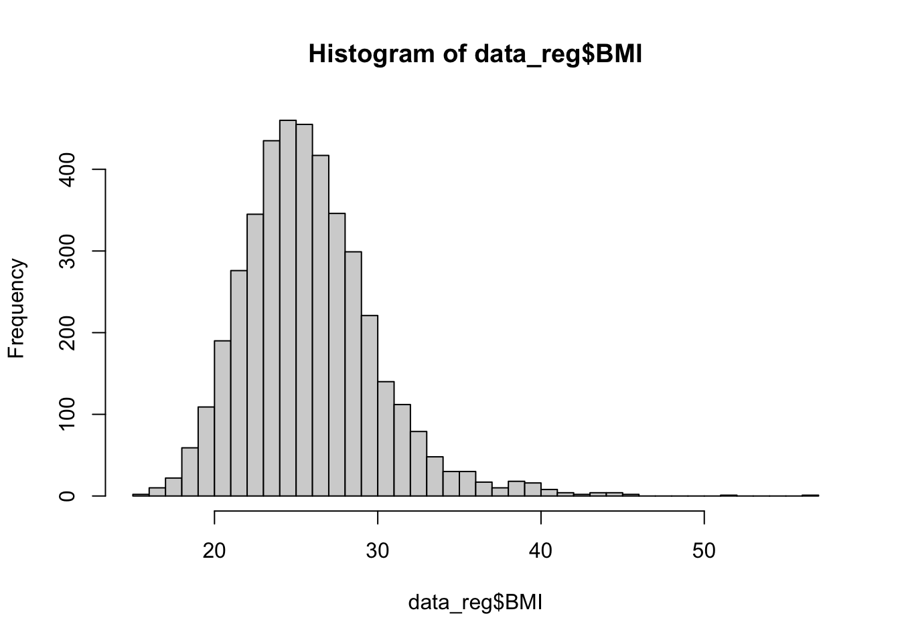

Jenny Wagner, PhD, MPH
Department of Public
Health
California State University, Sacramento
In Lab 8, we’ll shift our focus from linear regression (our topic last week) to a new type of model: logistic regression. While linear regression is useful for predicting continuous outcomes (like systolic blood pressure, BMI, or area-level disease incidence rates), logistic regression is used when the outcome is binary — that is, when there are only two possible values. In public health research, this often means modeling the presence or absence of a health outcome, such as disease status or event occurrence.
We’ll use the Framingham Heart Study dataset to investigate how baseline characteristics like age, sex, smoking status, BMI, blood pressure, cholesterol, and diabetes relate to the risk of having a heart attack during the study’s follow-up period. Our outcome of interest here is binary: whether or not a participant experienced a heart attack during the follow-up period (yes/no).
Like linear regression, logistic regression allows us to examine associations between predictors and an outcome, but instead of estimating the mean of a continuous outcome, it models the probability of a binary outcome. Because probabilities must fall between 0 and 1, logistic regression uses the logit function (the log of the odds) to transform probabilities into a continuous scale that can be modeled using a linear equation.
There are several important assumptions to keep in mind when using logistic regression:
After completing Lab 8, you will be able to:
For Lab 8, we will continue our exploration of risk factors for
cardiovascular disease using the Framingham Heart Study. In this Lab we
will focus on a specific outcome: the occurrence of heart attacks during
the follow-up period (called MI_FCHD). Our goal is to build
a logistic regression model using baseline characteristics collected at
the start of the study to identify significant predictors of heart
attack risk.
When you are ready to start Lab 8:
.Rmd file in a folder
dedicated to Lab 8 materials.We will use the following packages in this Lab:
# load packages
library(tidyverse)
library(naniar)
library(stats)
library(lmtest)
library(performance) Set your working directory using the setwd() function
(see Assignment Guidelines for detailed instructions).
setwd("YOUR FILE PATH HERE")Use the read.csv() function to import the “frmgham2.csv”
dataset. For this to work, this file will need to be saved in the
working directory you specified in the above step.
As we are starting here with the original Framingham Heart Study dataset (and not the cleaned version we have used in a few prior Labs), we will need to follow a few steps to prepare the dataset for analysis. First, we will filter the dataset to contain only the baseline sample. This is because we are going to investigate the association between baseline characteristics and heart attack risk.
Note: Although we will be analyzing only the baseline observations, our outcome of interest — whether a participant experienced a heart attack (recorded in the dataset as
MI_FCHD) applies to the entire follow-up period. This variable is binary, where “1” indicates that a participant experienced a heart attack at some point during follow-up, and “0” indicates they did not.
In analyzing data from prospective cohort studies such as this, the
standard approach is to start with a disease-free population and observe
the occurrence of new cases over time. As such, we will restrict our
analysis to individuals without prevalent heart disease at baseline. We
can filter the dataset to include only participants without heart
disease at baseline (indicated by the variable PREVCHD) as
follows:
# filter to include only individuals without prevalent heart disease at baseline
data_sub <- data_sub %>% filter(PREVCHD == 0)Next, let’s retain only the variables we plan to use in our
regression analysis - including our outcome and predictors of interest -
so that our dataset is smaller and more manageable. As discussed above,
we will investigate sex, age, BMI, systolic blood pressure, total
cholesterol level, smoking status, and diabetes status as possible
predictors of heart attack risk. We can retain these variables using the
select() function as follows:
# select variables we want to use in regression analysis
data_reg <- data_sub %>% select(RANDID, SEX, AGE, BMI, SYSBP, TOTCHOL, CURSMOKE, DIABETES, MI_FCHD)Before we begin our analysis, let’s quickly check for missing data by
nesting the is.na() function within the
colSums() function as follows:
## RANDID SEX AGE BMI SYSBP TOTCHOL CURSMOKE DIABETES
## 0 0 0 19 0 50 0 0
## MI_FCHD
## 0From the output, we can see there are 19 missing values for BMI
(BMI) and 50 missing values for total cholesterol
(TOTCHOL). Since there are very few missing values relative
to our sample size, let’s address missingness using complete case
analysis (i.e., remove rows with any missing values), as follows:
Finally, as we have done in prior Labs, let’s identify variables
types and modify them as needed. In the past, we have used the
class() function to check variable types one at a time. As
a quicker alternative, we can use the str() command to
check the structure of our dataset, including variable types, as
follows:
## 'data.frame': 4172 obs. of 9 variables:
## $ RANDID : int 2448 6238 9428 10552 11252 11263 12629 12806 14367 16365 ...
## $ SEX : int 1 2 1 2 2 2 2 2 1 1 ...
## $ AGE : int 39 46 48 61 46 43 63 45 52 43 ...
## $ BMI : num 27 28.7 25.3 28.6 23.1 ...
## $ SYSBP : num 106 121 128 150 130 ...
## $ TOTCHOL : int 195 250 245 225 285 228 205 313 260 225 ...
## $ CURSMOKE: int 0 0 1 1 1 0 0 1 0 1 ...
## $ DIABETES: int 0 0 0 0 0 0 0 0 0 0 ...
## $ MI_FCHD : int 1 0 0 0 0 1 0 0 0 0 ...Our output contains a list of the variables in our dataset, followed by the variable type, where “num” indicates a variable is a continuous numerical variable and “int” indicates a variable is an integer (i.e., a discrete numerical variable). For our regression analysis, this distinction between continuous numerical variables (“num”) and discrete numerical variables (“int”) will not matter. However, as we have done many times in the past, we should convert any variables that represent categories (rather than quantities) to factor variables. In our dataset, this includes sex, smoking status, diabetes status, and occurrence of heart attacks during follow-up. We can modify these variables as follows:
# convert sex to unordered factor variable
data_reg$SEX <- factor(data_reg$SEX,
levels=c("1", "2"),
ordered=FALSE)# convert smoking status to unordered factor variable
data_reg$CURSMOKE <- factor(data_reg$CURSMOKE,
levels=c("0", "1"),
ordered=FALSE)# convert diabetes status to unordered factor variable
data_reg$DIABETES <- factor(data_reg$DIABETES,
levels=c("0", "1"),
ordered=FALSE)# convert occurrence of heart attack to unordered factor variable
data_reg$MI_FCHD <- factor(data_reg$MI_FCHD,
levels=c("0", "1"),
ordered=FALSE)Before we build our logistic regression model, we should be familiar
with the variables we plan to include. First, we should know the
distribution of our outcome of interest (i.e., we should know how many
people experienced a heart attack during follow-up and how many did
not). Understanding the distribution of the outcome provides context for
interpreting results and ensures there are enough events to support a
stable logistic regression model. We can check the number who
experienced a heart attack using the table() command as
follows:
# check how many people in the sample experienced a heart attack during follow-up
table(data_reg$MI_FCHD)##
## 0 1
## 3577 595From the output, we can see there are 595 participants who experienced a heart attack during follow-up and 3577 participants who did not.
Next, let’s check the distribution of our predictor variables of interest, using histograms for numerical variabes and tables for categorical variables, as follows:

##
## 1 2
## 1808 2364##
## 0 1
## 2115 2057##
## 0 1
## 4066 106The histograms above show that BMI, systolic blood pressure, and total cholesterol are right-skewed. While logistic regression does not require numerical predictor variables to be normally distributed, it does assume that each continuous predictor has a linear relationship with the log-odds of the outcome. Skewed predictors may sometimes violate this assumption. As we move forward with modeling, we’ll need to keep an eye on whether any transformations (e.g., log or square root) or other adjustments are needed to better meet the linearity of the logit assumption. In such cases, achieving more symmetric distributions can help improve model fit. For now, let’s move on with fitting our initial logistic regression model.
In this step, we will use the glm() function to fit a
logistic regression model. Recall that the goal of logistic regression
is to examine how a set of predictor variables (in this case, sex, age,
BMI, blood pressure, cholesterol, smoking status, and diabetes) are
associated with the probability that a participant experienced a heart
attack during the follow-up period.
We will specify family = binomial because our outcome
variable (MI_FCHD) is binary, meaning it takes the value
“1” if a heart attack occurred and “0” if it did not. The binomial
family tells R to use a logit link function, which models the
log-odds of the outcome as a linear combination of the predictors. In
other words, the model estimates how each predictor affects the log-odds
of having a heart attack, holding the other variables constant. This
allows us to understand the relative contribution of each factor to
heart attack risk while adjusting for the others.
# fit initial logistic regression model
model1 <- glm(MI_FCHD ~ SEX + AGE + BMI + SYSBP + TOTCHOL + CURSMOKE + DIABETES,
family = binomial, data = data_reg)Just as we did with linear regression, we can use the
summary() function to view the model results, as
follows:
##
## Call:
## glm(formula = MI_FCHD ~ SEX + AGE + BMI + SYSBP + TOTCHOL + CURSMOKE +
## DIABETES, family = binomial, data = data_reg)
##
## Coefficients:
## Estimate Std. Error z value Pr(>|z|)
## (Intercept) -7.559888 0.498172 -15.175 < 2e-16 ***
## SEX2 -1.195035 0.101648 -11.757 < 2e-16 ***
## AGE 0.022749 0.006030 3.773 0.000162 ***
## BMI 0.035429 0.011885 2.981 0.002874 **
## SYSBP 0.015898 0.002203 7.217 5.33e-13 ***
## TOTCHOL 0.007763 0.001059 7.328 2.33e-13 ***
## CURSMOKE1 0.310982 0.099839 3.115 0.001840 **
## DIABETES1 0.905122 0.222462 4.069 4.73e-05 ***
## ---
## Signif. codes: 0 '***' 0.001 '**' 0.01 '*' 0.05 '.' 0.1 ' ' 1
##
## (Dispersion parameter for binomial family taken to be 1)
##
## Null deviance: 3418.4 on 4171 degrees of freedom
## Residual deviance: 3044.3 on 4164 degrees of freedom
## AIC: 3060.3
##
## Number of Fisher Scoring iterations: 5The output provides the results of our logistic regression model - which, again, estimates how each predictor is associated with the log-odds of experiencing a heart attack. This may or may not be our “final” model, but for now, let’s get familiar with the output:
Before we interpret and use our model, we first need to run model diagnostics to ensure the assumptions of logistic regression are met. This means checking: (1) whether each numerical predictor variable has a linear relationship with the log-odds of the outcome, and (2) whether there is any concerning multicollinearity between predictor variables.
We will use the Box-Tidwell Test to check whether each numerical predictor has a linear relationship with the log-odds of the outcome. This test adds an interaction term between each numerical variable and its log-transformed version (e.g., AGE * log(AGE)) to the model. If the relationship between the predictor and the log-odds is truly linear, this interaction term should not be statistically significant. In a nutshell…
When using the Box-Tidwell Test, we should first make sure that all
values for each numerical predictor variable are greater than 0, as the
log of 0 is undefined. To check whether there are any 0 values, you can
open the data_reg object (click on the object in the
Environment window to open it in a new tab), then click on the column
name for each numerical variable to quickly sort the values from lowest
to highest. If you don’t see any 0 values, you can proceed with the
test. If needed, you can add a small constant (e.g., 0.01) to any
variable that has 0 values.
In our case, there are no 0 values for age, BMI, systolic blood pressure, or total cholesterol, so we will continue on to the first step of the test, which is to create new variables for the log of each numerical predictor, which we can do as follows:
# Create new variables for the log of each predictor
data_reg$AGE_log <- log(data_reg$AGE)
data_reg$BMI_log <- log(data_reg$BMI)
data_reg$SYSBP_log <- log(data_reg$SYSBP)
data_reg$TOTCHOL_log <- log(data_reg$TOTCHOL)Next, we will fit a logistic regression model containing all predictors of interest. This time, however, we will also include interaction terms between each numerical predictor variable and its log version, as follows:
# Fit a model including interactions between variables and their log
bt_model <- glm(MI_FCHD ~ SEX + AGE + I(AGE*AGE_log) +
BMI + I(BMI*BMI_log) +
SYSBP + I(SYSBP*SYSBP_log) +
TOTCHOL + I(TOTCHOL*TOTCHOL_log) +
CURSMOKE + DIABETES,
data = data_reg, family = binomial)
summary(bt_model)##
## Call:
## glm(formula = MI_FCHD ~ SEX + AGE + I(AGE * AGE_log) + BMI +
## I(BMI * BMI_log) + SYSBP + I(SYSBP * SYSBP_log) + TOTCHOL +
## I(TOTCHOL * TOTCHOL_log) + CURSMOKE + DIABETES, family = binomial,
## data = data_reg)
##
## Coefficients:
## Estimate Std. Error z value Pr(>|z|)
## (Intercept) -14.801311 4.663261 -3.174 0.00150 **
## SEX2 -1.172554 0.103948 -11.280 < 2e-16 ***
## AGE 0.218618 0.336034 0.651 0.51532
## I(AGE * AGE_log) -0.039845 0.068102 -0.585 0.55849
## BMI 0.329809 0.387075 0.852 0.39418
## I(BMI * BMI_log) -0.067996 0.089046 -0.764 0.44510
## SYSBP 0.077129 0.098960 0.779 0.43574
## I(SYSBP * SYSBP_log) -0.010173 0.016467 -0.618 0.53670
## TOTCHOL 0.056288 0.036196 1.555 0.11993
## I(TOTCHOL * TOTCHOL_log) -0.007413 0.005493 -1.349 0.17721
## CURSMOKE1 0.315481 0.100200 3.149 0.00164 **
## DIABETES1 0.933984 0.222574 4.196 2.71e-05 ***
## ---
## Signif. codes: 0 '***' 0.001 '**' 0.01 '*' 0.05 '.' 0.1 ' ' 1
##
## (Dispersion parameter for binomial family taken to be 1)
##
## Null deviance: 3418.4 on 4171 degrees of freedom
## Residual deviance: 3040.9 on 4160 degrees of freedom
## AIC: 3064.9
##
## Number of Fisher Scoring iterations: 5From the model summary, we can see that none of the interaction terms are statistically significant, meaning the linearity assumption is likely met for each numerical predictor, and we won’t need to use any variable transformations. Yay!
Next, we will check for multicollinearity between predictor
variables. Recall from our exploration of linear regression that
multicollinearity occurs when two or more predictor variables are highly
correlated. This can cause problems in estimating regression
coefficients. Just as we did in Lab 7, we will use the
check_collinearity() function to generate a Variance
Inflation Factor (VIF) for each variable, as follows:
## # Check for Multicollinearity
##
## Low Correlation
##
## Term VIF VIF 95% CI adj. VIF Tolerance Tolerance 95% CI
## SEX 1.12 [1.09, 1.17] 1.06 0.89 [0.86, 0.92]
## AGE 1.21 [1.17, 1.26] 1.10 0.83 [0.79, 0.85]
## BMI 1.13 [1.09, 1.17] 1.06 0.89 [0.85, 0.91]
## SYSBP 1.28 [1.23, 1.33] 1.13 0.78 [0.75, 0.81]
## TOTCHOL 1.06 [1.03, 1.10] 1.03 0.95 [0.91, 0.97]
## CURSMOKE 1.14 [1.11, 1.19] 1.07 0.88 [0.84, 0.90]
## DIABETES 1.02 [1.01, 1.09] 1.01 0.98 [0.92, 0.99]From the output, we can see the VIF values (second column from the left) are all close to 1. This means there is no multicollinearity in our original model. Great!
Now that we have verified our original model meets assumptions of
logistic regression, we can proceed with interpreting our results.
Recall that the coefficients from a logistic regression model represent
changes in the log-odds of the outcome for a one-unit increase in each
predictor. While this is useful from a modeling standpoint, log-odds can
be hard to interpret intuitively. To make our results more meaningful,
we can exponentiate the coefficients using the
exp() function. This converts log-odds to odds
ratios, which are easier to interpret in a public health
context. An odds ratio (OR) tells us how the odds of the outcome change
with a one-unit increase in the predictor:
We can exponentiate the regression coefficients from our model by
nesting the coef() function within the exp()
function and save the result to an R object (called
odds_ratios), as follows:
Let’s round the odds ratios to three decimal places and put them in a nice table, as follows:
# put odds ratios in a nice table
odds_ratios <- as.data.frame(round(odds_ratios, 3))
print(odds_ratios)## round(odds_ratios, 3)
## (Intercept) 0.001
## SEX2 0.303
## AGE 1.023
## BMI 1.036
## SYSBP 1.016
## TOTCHOL 1.008
## CURSMOKE1 1.365
## DIABETES1 2.472In the output, we see two columns - one listing the predictors of interest and the other listing the odds ratio associated with each predictor. In the next section, we’ll discuss how to interpret these results.
If you take away only one thing from this Lab, let it be this: how to correctly interpret an odds ratio. Odds ratios are one of the most commonly reported effect measures in public health research involving binary outcomes. They tell us how the odds of an outcome (like having a heart attack) change in relation to a predictor variable:
For example, we can interpret the odds ratios we obtained in the previous section as follows:
In Lab 8, you learned how to fit a logistic regression model to explore the relationship between multiple predictors and a binary health outcome. You also checked model assumptions and converted regression coefficients into odds ratios to make results easier to interpret. Most importantly, you practiced interpreting odds ratios, which is a core skill in public health research.
Logistic regression is a powerful tool for identifying and quantifying risk factors for disease. By understanding how variables like age, smoking, or diabetes affect the odds of a health outcome, public health professionals can make informed decisions about prevention strategies, resource allocation, and health policy.
When you are ready, please submit the following to the Lab 8 assignment page on Canvas:
.Rmd extension.html filePlease reach out to me at jenny.wagner@csus.edu if you have any questions. See you in class!